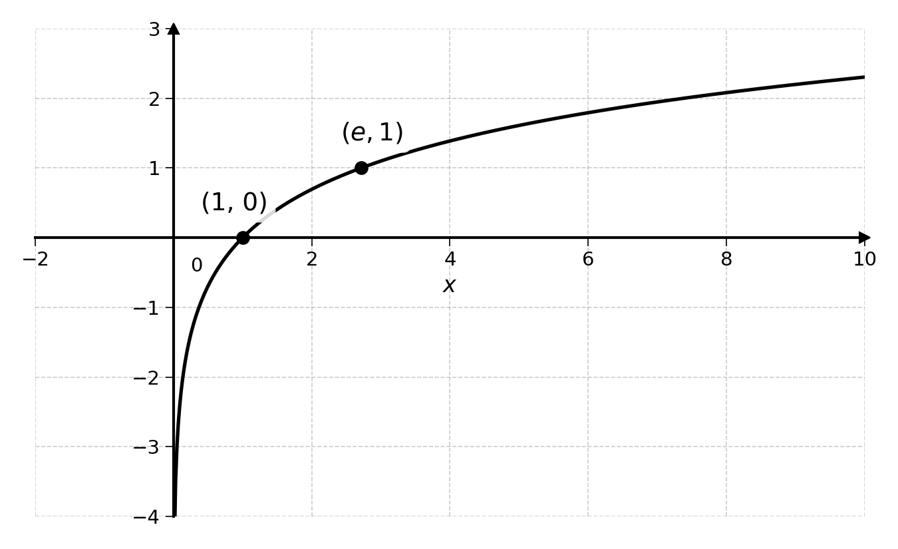
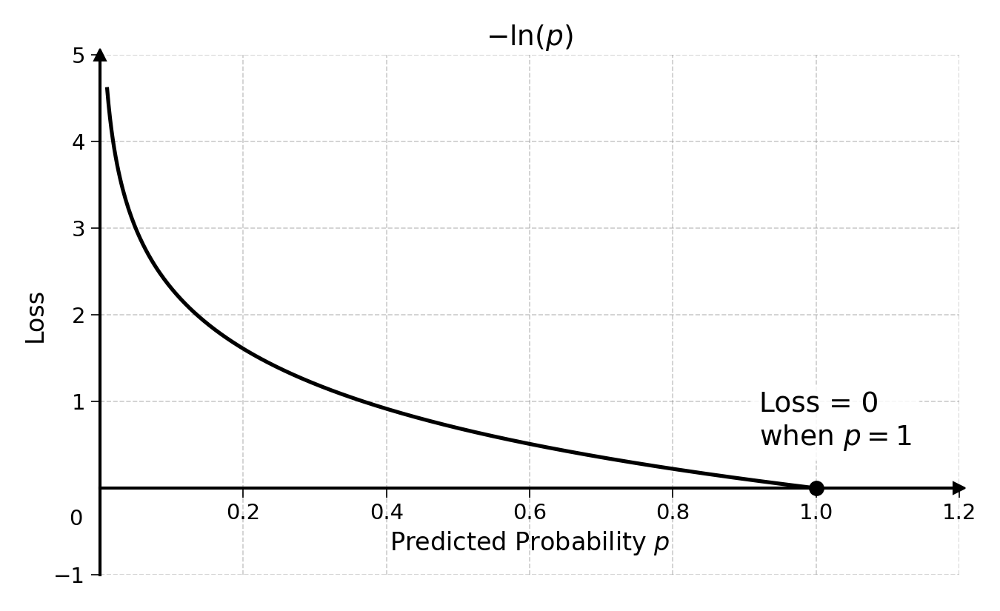
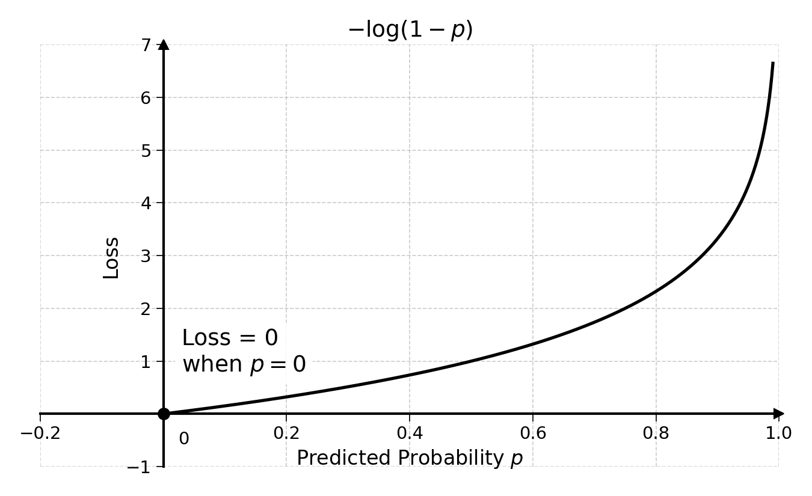

26 Calibrating Classification Models
The previous chapter covered scoring metrics like accuracy, precision and recall. These metrics measure whether the model classifies observations into the right category. But they say little about the quality of the predicted probabilities. They also depend on the choice of threshold, which makes comparison difficult.
The most widely used calibration metric for binary classification is binary cross-entropy. This is a tricky formula to master, as it is based on information theory (Shannon 1948). It uses logarithms, a concept that has not been covered yet.
26.1 Logarithms
The logarithm, noted “log”, is the inverse operation of exponentiation. It is very important for machine learning. You may remember from the logistic regression chapter that exponentiation looks like:
\[ 2^3 = 2 \times 2 \times 2 = 8 \]
Here, the exponent 3 indicates that the base 2 should be multiplied 3 times with itself.
Before we explain logarithms any further, let’s look at a few examples:
\[ 2^3 = 2 \times 2 \times 2 = 8 \quad \Rightarrow \quad \log_2(8) = 3 \]
\[ 2^2 = 2 \times 2 = 4 \quad \Rightarrow \quad \log_2(4) = 2 \]
The last line can be read as “log base 2 of 4 equals 2”. Notice that, like exponents, logarithms have a base.
When writing:
\[ \log_2(4) = \text{ ?} \]
We ask the question: to what power should I raise 2 to get to 4?
More generally:
\[ \log_a(b) = \text{ ?} \]
Asks the question: to what power should I raise number \(a\) to get to number \(b\)?
Exercise 26.1 Compute \(\log_2(16)\), \(\log_3(27)\), and \(\log_{10}(1000)\).
26.1.1 The Natural Logarithm
The logarithm with base \(e\) has a specific name and notation. It is called the natural logarithm and noted \(\ln(x)\):
\[ \ln(e^x) = x \]
\[ \ln(e) = \ln(e^1) = 1 \]
As you may start to understand, the logarithm is the inverse operation of the exponent:
\[ \log_2(2^3) = 3 \]
\[ \ln(e^{10}) = 10 \]
The function \(\ln(x)\) has the following shape:

Whereas \(e^x\) models exponential growth, \(\ln(x)\) models logarithmic growth: fast growth at first, then slowing down. Both are very useful for dealing with probabilities and binary outcomes.
26.1.2 Properties of Logarithms
Just like exponents, logarithms have useful properties:
\[ \log(a^n) = n \cdot \log(a) \]
For instance, we know that \(2^3 = 8\), so \(\log_2(8) = 3\). We also know that \(8^2 = 64\). Using the rule above:
\[ \log_2(8^2) = 2 \cdot \log_2(8) = 2 \times 3 = 6 \]
And \(2^6 = 64\).
\[ \log\left(\frac{1}{a}\right) = \log(a^{-1}) = -\log(a) \]
Using the rule with \(\frac{1}{8}\):
\[ \log_2\left(\frac{1}{8}\right) = -\log_2(8) = -3 \]
And \(2^{-3} = \frac{1}{8}\).
\[ \log(a \times b \times c) = \log(a) + \log(b) + \log(c) \]
Let’s verify this with \(a=2\), \(b=4\) and \(c=8\). Multiplying them first:
\[ \log_2(2 \times 4 \times 8) = \log_2(64) = 6 \]
Now computing each logarithm separately and summing them:
\[ \log_2(2) + \log_2(4) + \log_2(8) = 1 + 2 + 3 = 6 \]
\[ \log(1) = 0 \]
This holds regardless of the base, since any number raised to the power of 0 equals 1. With base 2: \(2^0 = 1\), so \(\log_2(1) = 0\).
The log of 0 or any negative number is not defined.
Exercise 26.2 Using the properties above, simplify \(\log_2(8 \times 4)\) in two different ways and show that both give the same result.
Another very important rule for the rest of this book:
\[ \frac{d}{dx} \ln(x) = \frac{1}{x} \]
In words, the derivative of \(\ln(x)\) with respect to \(x\) is \(\frac{1}{x}\). The proof of this rule is beyond the scope of this book, though very interesting for the curious reader.
26.2 Cross-Entropy
Now that we understand logarithms, we can tackle cross-entropy. The cross-entropy formula has two parts, one for each possible value of the target \(y\). Both parts use the natural logarithm \(\ln\).
Cross-entropy comes from information theory, which uses the logarithm base 2, giving a loss measured in bits. Machine Learning uses the natural logarithm because of the rule seen above:
\[ \frac{d}{dx} \ln(x) = \frac{1}{x} \]
As the loss will be minimised with gradient descent, \(\ln\) is often preferred.
26.2.1 Loss When y = 1
The first part computes the loss when the target \(y\) is 1:
\[ \text{Loss}_{y=1} = \ln\left(\frac{1}{p}\right) = -\ln(p) \]
As a reminder, this is due to the rule:
\[ \ln\left(\frac{1}{a}\right) = \ln(a^{-1}) = -\ln(a) \]
Let’s plot this loss as a function of \(p\):

This loss is 0 when \(p\) is equal to 1, as the model predicts the probability perfectly. On the other hand, the loss grows fast as \(p\) tends to 0, as the model is very wrong.
26.2.2 Loss When y = 0
The second part computes the loss when the target \(y\) is 0:
\[ \text{Loss}_{y=0} = \ln\left(\frac{1}{1-p}\right) = \ln((1-p)^{-1}) = -\ln(1-p) \]
Plotting the loss as a function of \(p\):

The loss is 0 when \(p\) equals 0, as the model predicts the target perfectly. The loss grows fast as \(p\) tends to 1, as the model wrongly predicts the target.
26.2.3 Putting It Together
These two parts can be combined into the cross-entropy formula for a given observation \(i\):
\[ \text{CE}_i = y_i \cdot \text{Loss}_{y_i=1} + (1 - y_i) \cdot \text{Loss}_{y_i=0} \]
This formula will compute the loss depending on the value of the target. Note that when \(y_i\) equals 1, the cross-entropy becomes:
\[ 1 \cdot \text{Loss}_{y_i=1} + (1 - 1) \cdot \text{Loss}_{y_i=0} = \text{Loss}_{y_i=1} \]
Exercise 26.3 What happens to this formula when the target \(y\) is equal to 0?
Substituting the loss formulas, where:
- \(\text{Loss}_{y_i=1} = -\ln(p_i)\)
- \(\text{Loss}_{y_i=0} = -\ln(1-p_i)\)
We get the full cross-entropy for a single observation:
\[ \text{CE}_i = y_i \cdot \left(-\ln(p_i)\right) + (1 - y_i) \cdot \left(-\ln(1 - p_i)\right) \]
Factoring the negative sign out, we get:
\[ \text{CE}_i = -\left[ y_i \cdot \ln(p_i) + (1 - y_i) \cdot \ln(1 - p_i) \right] \]
Computing the sum of this for the entire dataset of \(n\) observations, we get:
\[ \text{CE} = \sum_{i=1}^{n} -\left[ y_i \cdot \ln(p_i) + (1 - y_i) \cdot \ln(1 - p_i) \right] \]
Putting the negative sign outside the sum, we get the total cross-entropy loss:
\[ \text{CE} = -\sum_{i=1}^{n} \left[ y_i \cdot \ln(p_i) + (1 - y_i) \cdot \ln(1 - p_i) \right] \]
26.3 Calculating Cross-Entropy
You now understand how cross-entropy works. Let’s calculate the cross-entropy of two different models on the same data:
| Observation | \(y\) | Model A (\(p_a\)) | Model B (\(p_b\)) |
|---|---|---|---|
| 1 | 1 | 0.8 | 0.9 |
| 2 | 0 | 0.5 | 0.2 |
| 3 | 1 | 0.6 | 0.8 |
We can compute the cross-entropy loss of Model A by calculating the loss for each observation:
\[ \text{CE}_1 = -(1 \cdot \ln(0.8) + 0 \cdot \ln(0.2)) = -\ln(0.8) \approx 0.2 \]
\[ \text{CE}_2 = -(0 \cdot \ln(0.5) + 1 \cdot \ln(0.5)) = -\ln(0.5) \approx 0.7 \]
\[ \text{CE}_3 = -(1 \cdot \ln(0.6) + 0 \cdot \ln(0.4)) = -\ln(0.6) \approx 0.5 \]
Summing all these, we get:
\[ \text{CE}_A = 0.2 + 0.7 + 0.5 = 1.4 \]
Exercise 26.4 Compute the cross-entropy loss of Model B. Show that it is a better classifier than Model A (i.e. it has a lower cross-entropy loss).
26.4 Final Thoughts
Cross-entropy is the standard loss function used to train and evaluate logistic regressions. It measures how well the predicted probabilities match the actual outcomes, going beyond simple right-or-wrong scoring.
Together with the scoring metrics from the previous chapter (accuracy, precision, recall), cross-entropy provides a fuller picture of classification model performance. Scoring metrics tell you whether the model classifies correctly, while cross-entropy tells you whether the predicted probabilities are trustworthy.
Now that we know how to evaluate the goodness of fit of a logistic regression, it is time to move to the fitting process.
26.5 Solutions
Solution 26.1. Exercise 26.1
\(\log_2(16) = 4\) because \(2^4 = 16\)
\(\log_3(27) = 3\) because \(3^3 = 27\)
\(\log_{10}(1000) = 3\) because \(10^3 = 1000\)
Solution 26.2. Exercise 26.2
Method 1: Compute the product first, then the log:
\[\log_2(8 \times 4) = \log_2(32) = 5\]
because \(2^5 = 32\).
Method 2: Use the addition property:
\[\log_2(8 \times 4) = \log_2(8) + \log_2(4) = 3 + 2 = 5\]
Both methods give the same result: \(5\).
Solution 26.3. Exercise 26.3
When the target \(y\) is equal to 0, the cross-entropy becomes:
\[ 0 \cdot \text{Loss}_{y=1} + (1 - 0) \cdot \text{Loss}_{y=0} = \text{Loss}_{y=0} \]
Only the second part of the formula remains.
Solution 26.4. Exercise 26.4
Computing the cross-entropy loss for each observation of Model B:
\[ \text{CE}_1 = -\ln(0.9) \approx 0.1 \]
\[ \text{CE}_2 = -\ln(1 - 0.2) = -\ln(0.8) \approx 0.2 \]
\[ \text{CE}_3 = -\ln(0.8) \approx 0.2 \]
Summing all these:
\[ \text{CE}_B = 0.1 + 0.2 + 0.2 = 0.5 \]
Since \(\text{CE}_B = 0.5 < \text{CE}_A = 1.4\), Model B has a lower cross-entropy loss and is therefore the better classifier.